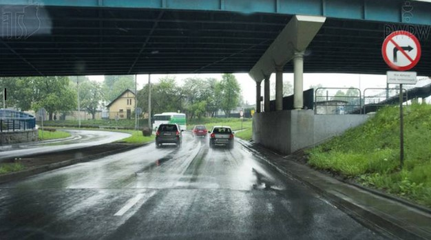
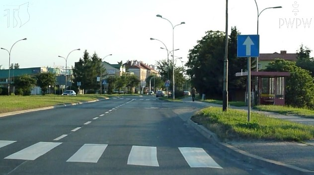
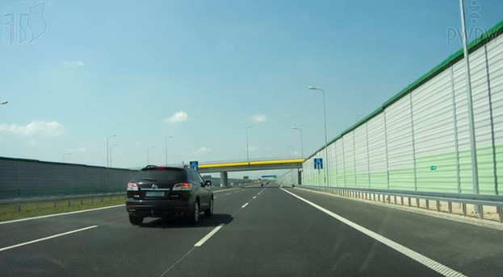
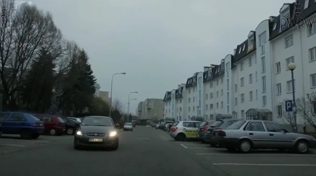

Nie można kontaktować się z Kubą ani super totalnym koksem Miszelem.
Można korzystać z internetu i z telefonu.
Jeżeli pytanie jest bezpośrednio związane z Tobą, nie możesz na nie odpowiedzieć
Polecam zapisywać już odgadnięte hasła
Czytajcie dokładnie dialogi
Wszystkie odpowiedzi oraz zagadki są związane z naszą grupką znajomych, ludźmi których znamy oraz znanymi nam miejscami.
Prosze się dobrze się bawić :)
Dobrze, że pozwoliłeś Saschy napić się piwka, dzięki temu wasza przyjaźń tylko się pogłębiła. Dzisiaj wszyscy siedzimy sobie na discordziku, gramy w lolka i jest po prostu w porządku. Nie ma problemów, nie ma zmartwień..
Impreza trwała w najlepsze. Jednak Sascha około godziny 4 stwierdził, że on już chce wrócić do domu. Wrócił z Matim Uberem. Od tamtej pory słuch o nim zaginął..
Byłeś dzisiaj umówiony z Saschą na siłkę, ale nie przyszedł. Możliwe, że speniał bo jest małą cipeczką, ale podejrzewasz, że coś się mogło stać… Z kim on wracał tym uberem…
Cholera nie mam zapisanego numeru do Michela, jaki on był...
Kurde Michel nie odbiera. Co on może teraz robić? Jest niedziela, 28 lipca, godzina 15:00…
Dobra napisze do niego sms… Tylko co napisać żeby zwrócić jego uwagę?
Siemanko, wiesz może co z Saschą?
Siema, czekaj bo oglądam wyścig mam nadzieję, że wygra Max.
Dobra nie oglądaj bo i tak wygra….
Chcesz zadzwonić do Ziombera, ale z jakiegoś powodu do niego również nie masz numeru. Na szczęście wychodząc z siłowni poczułeś gryzący zapach spalonej gumy i starte klocki hamulcowe. Zamykasz oczy, wytężasz węch..
To Ziomber kopie właśnie sprzęgło przed Fitness Platinium na Solvayu. To na pewno jego auto, bo rejestracja to:
Chodzą plotki, że podczas przejazdu Ziombera pod Platinium, ten nie użył kierunkowskazu ani razu.
Pukasz w okienko, na co Ziop natychmiast otwiera i mówi:
- Siemaa, ej stary myślisz, że Suder jest naturalem?
No dobra, ale masz na to jakiś dowód?
Podaj dowód:
Ziomber: -W sumie racja, zapomniałem o tym filmie
Ty: -Stary, wiesz może gdzie jest Sascha? Nie przyszedł na siłkę dzisiaj…
Ziomber: -Ty to weź zadzwoń do Japka, on mi dzisiaj rano mówił, że ktoś zostawił u niego telefon. Ja go pytam chłopie a jak on wygląda? A on na to, że no ma taką gigantyczną pionową kreskę na środku ekranu. No to ja mu mówię, może to Saschy?
-Myślę, że tak. Sascha lubi takie wymyślne designerskie telefony.
-To może tam czegoś się dowiesz? Może Sascha wrócił do Japka na klina i po telefon.
Ziomber: -A mógłbyś mnie w sumie podwieźć do Japka
Ty: -Nie no, ja teraz idę pompować stary.
Ty: -A mógłbym pożyczyć twoją furę i przywiozę ci ją za godzinę tu na parking?
Ziomber: -Pewnie, ale najpierw odpowiesz mi na kilka pytań:
(Możesz się pomylić 1 raz)
1. Czy możesz zatrzymać pojazd pod wiaduktem, jeśli znaki tego nie zabraniają?
2. Czy na drodze za następującym znakiem masz prawo wykonać manewr cofania?
3. Czy w zaprezentowanej sytuacji jesteś zobligowany zrezygnować z wyprzedzania, jeśli kierowca pojazdu poprzedzającego włączył prawy kierunkowskaz?
4. Czy po zabraniu pasażera, chcąc włączyć się do ruchu masz pierwszeństwo przed pojazdem z naprzeciwka, skręcającym w lewo na miejsce postojowe?
Odpalasz BMKę, czujesz dziwny zapach. Myślisz sobie, że to pozostałości z palonej gumy i sprzęgła. Radio odpala się na cały regulator. Leci DJ Pierdolony rak wątroby. Nagle widzisz płomienie wydobywające się spod maski. Wychodzisz. Auto eksploduje. Co robisz?
Ziomber: -Nie no chłopie, kto ci dał prawo jazdy. Sorry, ale nie dam ci mojej fury. Trzymaj się. Powodzenia mordeczko.
Ty: -Skoro nie samochodem, to trzeba pojechać do Japka śmierdzącą komunikacją. Ale jak do niego teraz dojechać?
Ciekawe jakdojadę...
Wybierasz najszybsze połączenie, bo przecież nie jesteś jebanym debilem. Dojeżdżasz do Japka, dzwonisz domoforem..
Nikt nie odbiera, ale na szczęście otwiera Ci jakiś sąsiad bo kretyn pomyślał, że możesz mieszkać w takiej melinie. Wyjeżdżasz na 4 piętro, pukasz, nikt nie odpowiada. Na szczęście dobrze wiesz, że Kuba trzyma zawsze zapasowy klucz pod wycieraczką.
Nie ma nikogo w mieszkaniu, ale wiesz po co przyszedłeś. Musisz znaleźć ten telefon. Tylko gdzie on go mógł schować…
Musisz znaleźć telefon Saschy w mieszkaniu Kuby. Masz na to 2 minuty inaczej przyjedzie ochrona i możesz pakować się do więzienia. Prawdopodobnie trzyma go w jakimś oczywistym miejscu…
2:00
Wyszedłeś z mieszkania. Nie zrezygnowałeś z odnalezienia Saschy.
Jesteś na środku mieszkania Japka
Tu jest biuro Japka… może tutaj?
To salon Japka.. najpewniej ten telefon jest tutaj
Jesteś w kuchni Japka
Sprawdź szafki:
Co to za kartka co tutaj jest napisane…
Cholera to jakaś kartka, ale co tutaj jest napisane...